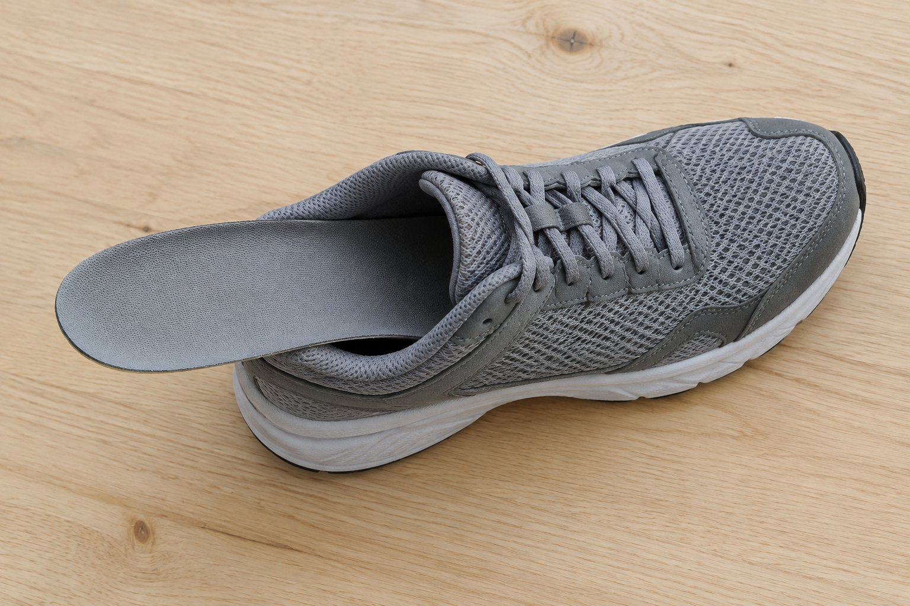
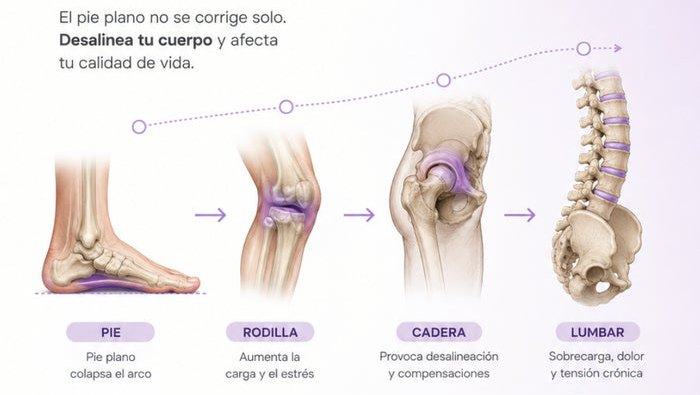
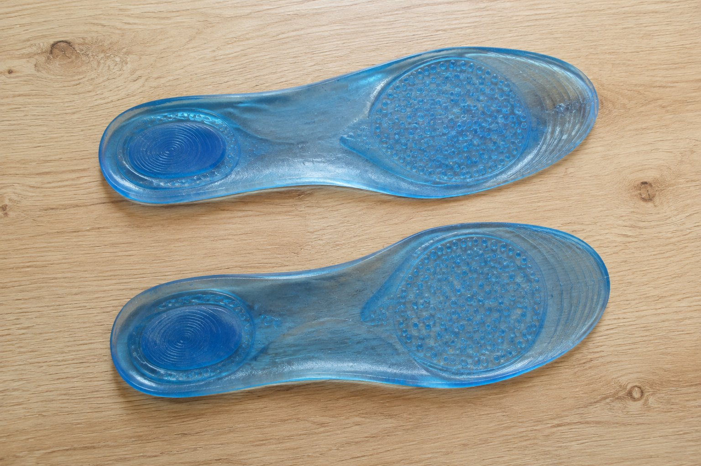
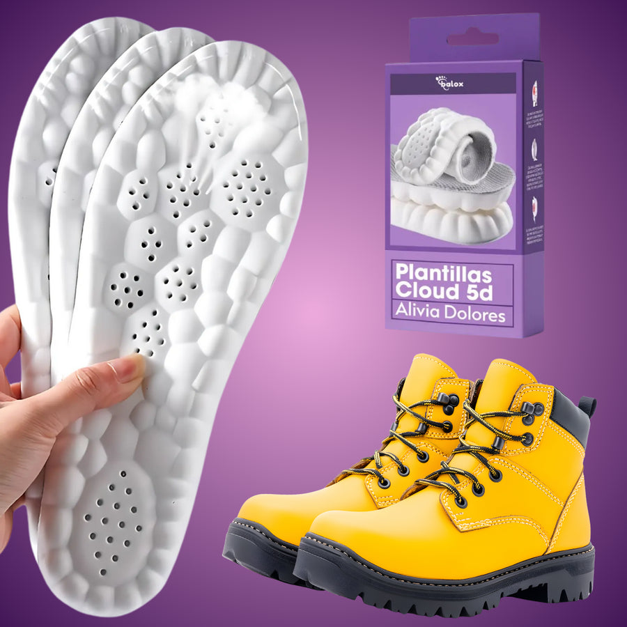
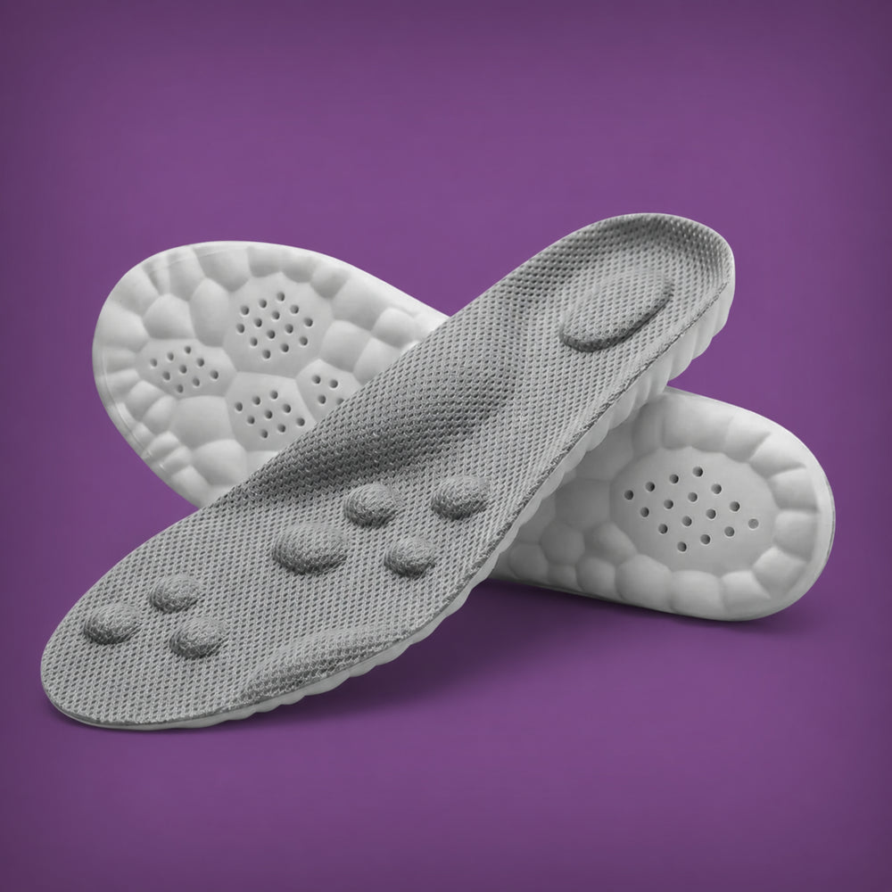
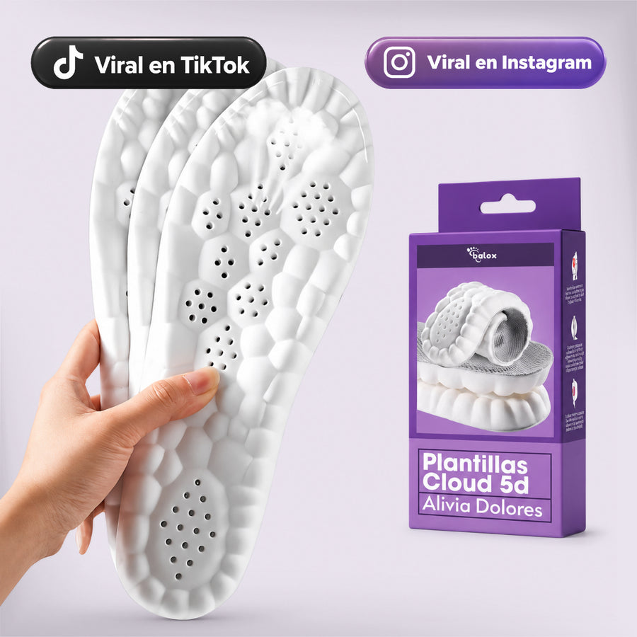
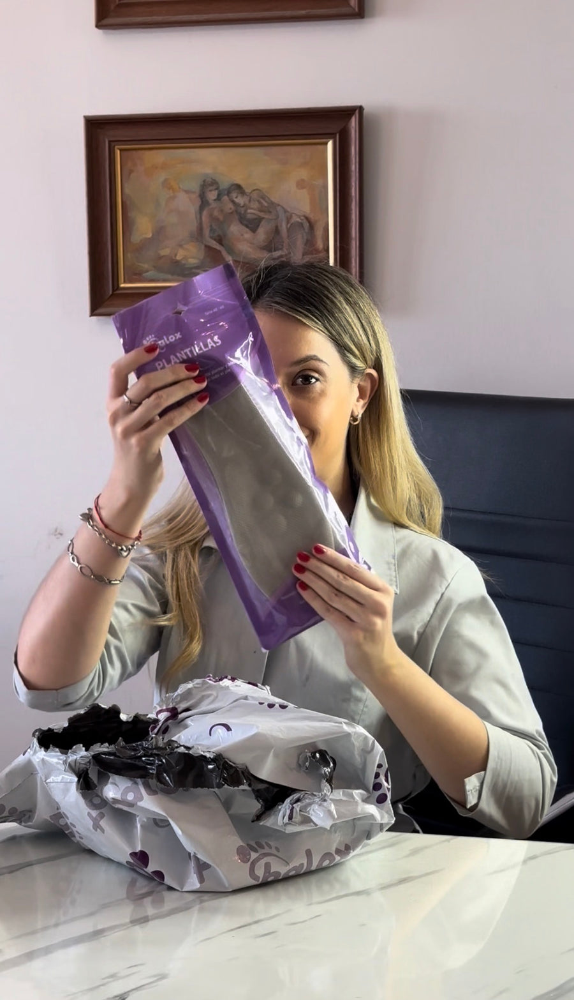
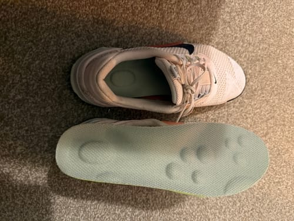
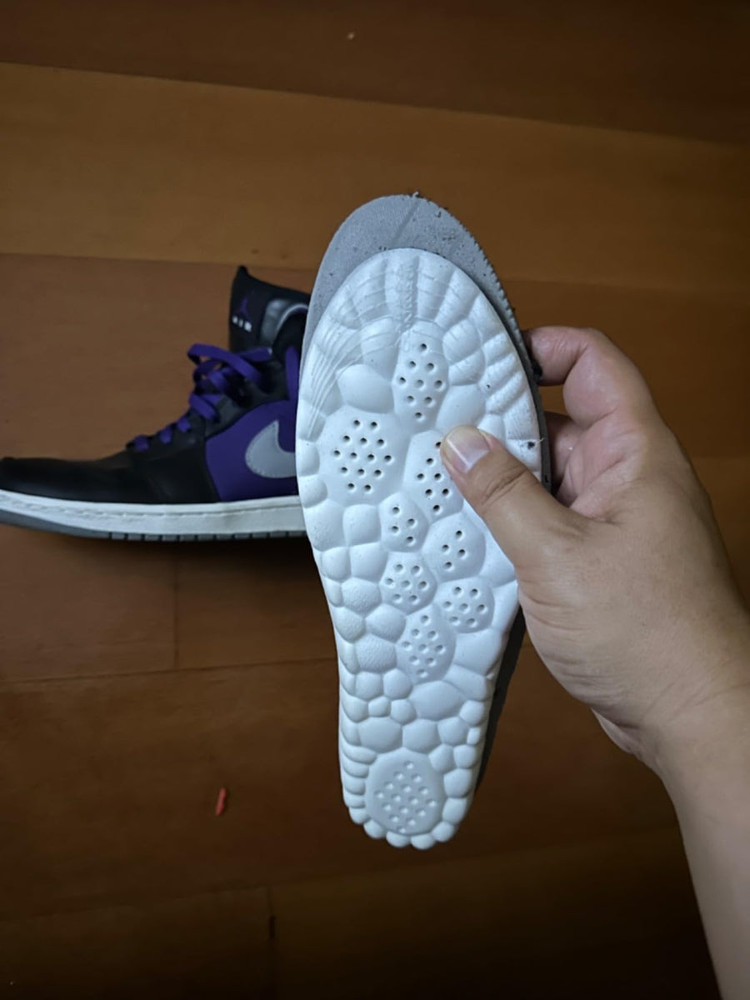
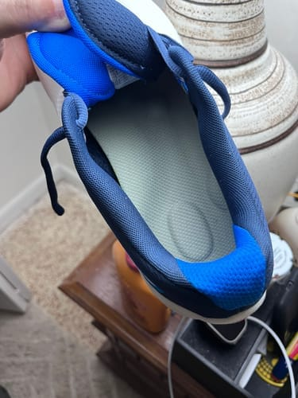

TRABAJO · NOTA
5 cosas que los que trabajan con botín de seguridad descubren tarde sobre el dolor de pies (y la que les cambió el turno)
Operarios, depósito, construcción, logística, planta: 9 a 12 horas sobre cemento con un botín que pesa casi un kilo. Hablamos con los que terminaban el turno sin poder apoyar el talón. Esto es lo que aprendieron.
El botín de seguridad está hecho para protegerte de lo que cae, de lo que pincha y de lo que resbala. No está hecho para que estés cómodo. Por eso la mayoría de los que lo usan 9 horas por día tiene la misma rutina: talones que arden a mitad de turno, pies que laten en el colectivo de vuelta, y el fin de semana “recuperándose” para empezar de nuevo el lunes.
Hablamos con operarios, gente de depósito y de obra que pasaron por eso. Estas son las cinco cosas que casi todos descubrieron tarde.
01
El problema no es el botín, es lo que viene adentro

Un botín de seguridad de $150.000 trae adentro una plantilla de fábrica de 3 milímetros, plana, de la espuma más barata del zapato. Toda la ingeniería está en la puntera, la suela antideslizante y la capellada. La plantilla es lo último en lo que pensó el fabricante, y es lo único que está entre tu talón y el cemento.
Por eso cambiar de marca de botín rara vez resuelve el dolor: cambiás de puntera, no de amortiguación.
02
Sobre cemento, cada paso pega más fuerte que tu peso

El cemento y el porcelanato industrial no devuelven nada. Cada apoyo manda la fuerza directo hacia arriba por el talón, y cada paso carga más que tu peso completo. Un turno de 10 horas puede significar 15.000 apoyos; con carga, muchísimo más.
Sin amortiguación real, tu talón es la zona de choque. Por eso el dolor no aparece a la hora 1: aparece a la hora 5 o 6, cuando el tejido ya no da más, y sube por el tobillo, la rodilla y la cintura.
03
Las plantillas de gel se aplastan en dos semanas adentro de un botín

Es lo primero que prueba todo el mundo: plantillas de gel de la farmacia o del chino, $10.000 o $15.000. Se sienten bien el primer día. Pero un botín con 90 kilos arriba, 10 horas por día, sobre cemento, es la peor condición posible para una espuma blanda: a las dos o tres semanas quedan como una hoja de papel, y la espuma aplastada no absorbe nada.
Lo que hace falta ahí adentro no es algo blando. Es algo que sostenga.
04
Lo que les cambió el turno: una plantilla con base firme y soporte de arco

Lo que funcionó para los que hablamos fue una plantilla argentina que se hizo conocida este año entre gente que trabaja parada: las Cloud-Comfy 5D. Tiene una base de doble densidad que no se vence, una copa de talón que amortigua el punto exacto que pega contra el cemento, un soporte de arco que evita que el pie colapse hacia adentro con la carga, y una superficie de relieves que reparte el apoyo en toda la planta.
Tienen 2 cm de espesor y entran en el botín sin apretar los dedos contra la puntera: sacás la plantilla de fábrica, ponés la Cloud encima como molde, recortás si hace falta y listo. Un comprador que trabaja 9 horas con zapatos de seguridad cuenta que “de a poco va generando ese descanso en los pies que estaba necesitando”. Otro, que trabaja 10 horas de pie: “desde que las uso se me fue el dolor en los pies”.
★★★★★ 4,79/5 · +190 reseñas verificadas · Las usan operarios, enfermeras y gente que trabaja parada
05
La cuenta que hizo el que las probó primero

Un botín nuevo “más cómodo”: $150.000, y el problema sigue. Plantillas de gel cada mes: $15.000 × 12. Ibuprofeno, el masajeador de $90.000 que usaste dos semanas, el fin de semana perdido en el sillón.
Un par de Cloud 5D cuesta $29.990 hoy en la web del fabricante; comprando 3 o 5 pares (uno para el botín, uno para las zapatillas, uno para el compañero) baja hasta $14.990 cada uno. Duran 12 a 18 meses de uso diario, y si no te funcionan las devolvés dentro de los 60 días.
Quién está detrás
No es una marca “de internet”: es la plantilla más vendida de Argentina

Las Cloud-Comfy 5D las vende Balox, una empresa argentina especializada en productos para el pie, con tienda oficial en Mercado Libre y más de 100.000 pares vendidos. 4,9 de puntuación, miles de reseñas, y la primera con doble amortiguación 5D y memoria térmica registrada en el INPI.
La diferencia
Comparado con lo que probablemente ya probaste
En lo que importa para alguien que trabaja con botín sobre cemento:
| Cloud-Comfy 5D | Plantillas de gel | Cambiar de botín | |
|---|---|---|---|
| Amortiguación que no se aplasta con carga | ✓ | ✗ | ~ |
| Copa de talón para el impacto sobre cemento | ✓ | ~ | ✗ |
| Soporte de arco con peso encima | ✓ | ✗ | ✗ |
| Entra en el botín sin apretar la puntera | ✓ | ✓ | – |
| Sirve para varios calzados | ✓ | ✓ | ✗ |
| Se puede probar y devolver (60 días) | ✓ | ✗ | ✗ |
| Precio | $29.990 por par (menos en pack) | $10.000–$20.000 | $120.000–$200.000 |
Comparación basada en información pública y precios de referencia en Argentina (noviembre 2026).
Lo que dicen los números
Qué contestaron quienes las usan
Datos del panel de clientes de la marca (encuesta a compradores con uso de más de 30 días):

El 97% dijo que el dolor de talón desapareció por completo.
Panel de clientes BaloxEl 90% dijo que puede usar sus zapatos de trabajo y botas todo el día.
Panel de clientes BaloxEl 96% dijo que “revivieron” sus zapatos y los hicieron más cómodos que cualquier otro.
Panel de clientes BaloxEl 100% notó resultados en los primeros 3 días de uso.
Panel de clientes Balox
Lo que no dice ni el fabricante ni esta nota: una plantilla no es un tratamiento médico. Si tenés dolor intenso, hinchazón, diabetes o una lesión diagnosticada, consultá a un profesional antes de cambiar tu calzado.
Lo que cuentan los que trabajan parados
Reseñas de compradores, tal cual las escribieron en la tienda oficial de la marca.



“10/10. Trabajo 10 horas de pie y desde que las uso se me fue el dolor en los pies. Más que conforme.”
“Por el momento son muy cómodas y solucionaron el dolor de los zapatos del trabajo.”
“Creo que el producto de a poco va generando ese descanso en los pies que estaba necesitando, ya que estoy parado 9 hs con zapatos de seguridad. También compré pares para mi hijo que juega al fútbol y al básquet.”
“Trabajo en pastelería y demanda horas de estar parado y realizar fuerza con carga pesada. Antes era imposible estar 4 horas parado y tenía que sentarme a descansar. Las molestias en mi rodilla van desapareciendo.”
“Son excelentes. Trabajo muchas horas de pie y ya no tengo dolor.”
Se venden en la web del fabricante (y hoy están con descuento por cantidad)
Al momento de publicar esta nota, el par está con 60% de descuento sobre el precio de lista, y comprando 3 o 5 pares (uno por calzado, o para repartir con los compañeros) el precio por par baja todavía más. Es la misma oferta que ve cualquiera que entra al sitio.
Plantillas Cloud-Comfy 5D
Talles 35 a 46 · Gris o negro · Recortables
$75.900$29.990por par · 3 pares a $21.990 c/u · 5 pares a $14.990 c/u
- Envío gratis comprando 4 pares o más (a todo el país)
- 3 cuotas sin interés
- Descuento extra pagando por transferencia bancaria
- Cambio de talle gratis durante 60 días, sin preguntas
- Garantía de 60 días: si no te funcionan, te devuelven el dinero
- De regalo: e-book de ejercicios para el dolor plantar, escrito por un podólogo de la UBA
La oferta de hoy termina en --:--:--
Al entrar, elegí la cantidad de pares (el descuento se aplica solo), después el talle y el color de cada par. El descuento extra se aplica eligiendo transferencia al pagar.
¿Entran en un botín con puntera de acero?
Sí. Sacás la plantilla de fábrica y ponés la Cloud 5D en su lugar (no una encima de la otra). Tienen 2 cm de espesor en el talón y van afinando hacia la punta, así que no te aprietan los dedos contra la puntera. Si el botín te queda justo, pedí el rango de talle más chico de los dos posibles.
¿Aguantan el sudor y la humedad del botín?
Se lavan a mano con agua tibia y jabón neutro y se secan a la sombra; la espuma de memoria térmica no retiene olor como el gel. Con dos pares alternados (uno se seca mientras usás el otro) duran más todavía.
¿Qué talle pido? ¿Y si estoy entre dos talles?
Pedí tu talle habitual de calzado. Vienen en rangos (35-36, 37-38, 39-40, 41-42, 43-44, 45-46) y son recortables: si quedás entre dos, pedí el más grande y recortá la punta siguiendo las guías del reverso. Si igual te equivocás, el cambio es gratis dentro de los 60 días.
¿Es normal que los primeros días se sientan raras?
Sí, y el fabricante lo avisa en las instrucciones: el arco sostenido es una posición nueva para el pie. Se recomienda usarlas 2 horas el primer día, 4 el segundo, y de ahí todo el día. Las reseñas que hablan de una molestia inicial son casi siempre de quien se las puso 10 horas de entrada.
¿Cuánto tarda en llegar?
Sale del depósito del fabricante en 24 a 48 horas hábiles. En CABA y GBA suele llegar entre 24 y 72 horas; al interior, de 3 a 6 días hábiles. Comprando 4 pares o más, el envío es gratis a todo el país.
Garantía de 60 días · Cambio de talle gratis · 3 cuotas sin interés